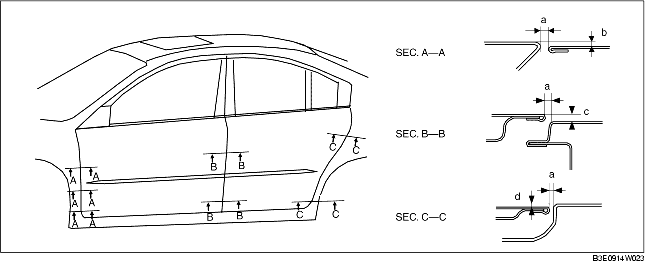

DOOR ADJUSTMENT
B3E091158010W04
1. Measure the gap and height difference between the front or rear door and the body.
2. Loosen the door hinge installation bolts or the door lock striker installation screws, and adjust the door.
-
Standard clearance
-
a: 2.7-4.7 mm {0.11-0.18 in}
-
b (top): -1.0-1.0 mm {-0.040-0.039 in}
-
b (middle): -0.5-1.5 mm {-0.020-0.059 in}
-
b (bottom): -0.3-1.3 mm {-0.027-0.051 in}
-
c (top): -1.0-1.0 mm {-0.040-0.039 in}
-
c (bottom): -0.5-1.5 mm {-0.020-0.059 in}
-
d (top): -1.0-1.0 mm {-0.040-0.039 in}
-
d (bottom): -0.5-1.5 mm {-0.020-0.059 in}

3. Tighten the bolts or screws.